Tutorial
In this tutorial, we demonstrate the usage of the PhaseSpaceDTFE.jl package to estimate the density and velocity fields from a GADGET-4 simulation with 64³ particles.
We start by importing the relevant libraries and loading the data:
using HDF5, Statistics, PhaseSpaceDTFE
import Plots # imported, as Plots also exports a function `density`
## set up simulation box
Ni = 64
L = 100.
sim_box = SimBox(L, Ni) ## need this for estimator creation
## load data
function load_data(file)
fid = h5open(file, "r")
pos = convert.(Float64, read(fid["PartType1"]["Coordinates"]))
vel = convert.(Float64, read(fid["PartType1"]["Velocities"]))
ids = read(fid["PartType1"]["ParticleIDs"])
time = read_attribute(fid["Header"], "Time")
close(fid)
ordering = sortperm(ids)
return (copy(pos[:,ordering]'), copy(vel[:,ordering]'), time)
end
function load_mass(file)
f = h5open(file, "r")
read_attribute(f["Header"], "MassTable")[2] # particle type 1
end
m = load_mass("../../test/data/snapshot_000.hdf5")
(coords_q, _, _) = load_data("../../test/data/snapshot_000.hdf5")
(coords_x, vels, _) = load_data("../../test/data/snapshot_002.hdf5")
nothingThe particle coordinates and velocities are Float64 matrices of size (N, 3), with one row per particle and the rows of coords_q, coords_x and vels in the same order. The particle mass m is a single number, or a vector of length N for simulations whose particle masses differ.
Prequel: Delaunay Tessellation Field Estimator
Before going through the PS-DTFE method, we demonstrate the traditional DTFE method by calling the PS-DTFE code on the final (Eulerian) particle positions only.
## construct estimator
dtfe = PS_DTFE(coords_x, coords_x, vels, m, sim_box)
## evaluate density field
Range = 0:0.2:100.
density_field = [density([L/2., y, z], dtfe) for y in Range, z in Range]
Plots.heatmap(Range, Range, log10.(density_field), aspect_ratio=:equal, xlims=(0, L), ylims=(0, L), c=:lighttemperaturemap, xlabel="[Mpc]", ylabel="[Mpc]")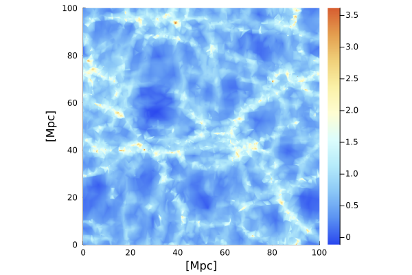
Phase-Space Delaunay Tessellation Field Estimator
The estimator is constructed once from the initial (Lagrangian) and final (Eulerian) positions, coords_q and coords_x, and the velocities vels:
## construct estimator
ps_dtfe = PS_DTFE(coords_q, coords_x, vels, m, sim_box)
## if want to ignore velocities
# ps_dtfe = PS_DTFE(coords_q, coords_x, m, sim_box)
nothingPS_DTFE tessellates the initial positions in the periodic box, computes the density at every particle from the volumes of the evolved tetrahedra around it, and builds a cell index for the point location. This takes a few seconds for a 64³ simulation and needs about 1.1 kB of memory per particle (0.3 GB for 64³ particles, about 2.3 GB for 128³).
We now evaluate the density field with the density()-function:
# evaluate density field
density_field = [density([L/2., y, z], ps_dtfe) for y in Range, z in Range]
Plots.heatmap(Range, Range, log10.(density_field), aspect_ratio=:equal, xlims=(0, L), ylims=(0, L), c=:lighttemperaturemap, xlabel="[Mpc]", ylabel="[Mpc]")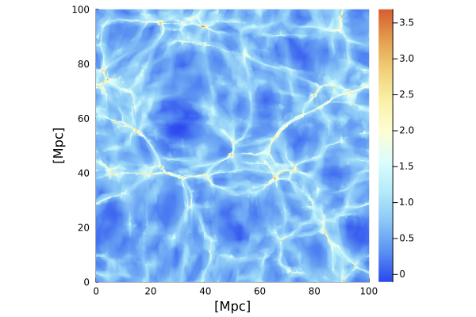
The corresponding number of streams is evaluated with the numberOfStreams()-function:
nstreams_field = [numberOfStreams([L/2., y, z], ps_dtfe) for y in Range, z in Range]
Plots.heatmap(Range, Range, nstreams_field, aspect_ratio=:equal, xlims=(0, L), ylims=(0, L), clim=(1, 7), c=:lighttemperaturemap, xlabel="[Mpc]", ylabel="[Mpc]")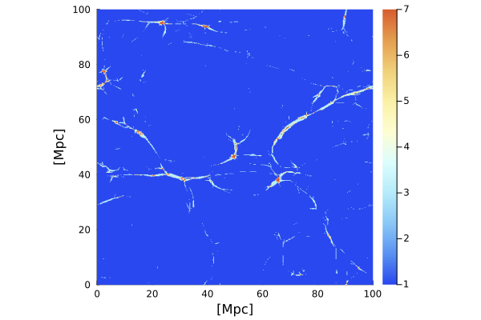
Points are taken modulo the box. Similarly, the velocity field is evaluated with the velocity()-function:
velocity([L/2., L/2., L/2.], ps_dtfe)3×3 Matrix{Float64}:
14.7473 -425.786 266.187
22.3145 -278.792 160.605
6.6267 -302.526 171.68In multistream regions, the velocity()-function returns the velocities of the individual streams, one row per stream (or [NaN NaN NaN] if single_stream=true is passed as the third argument). To obtain the stream-density weighted mean of the velocities, call the velocitySum()-function, which reduces to the velocity()-function in single-stream regions.
velocitySum([L/2., L/2., L/2.], ps_dtfe)1×3 Matrix{Float64}:
14.2096 -323.077 190.008The function inSimplices() returns the indices of the stored tetrahedra containing a point; ps_dtfe.simplices[i, :] are the rows of the particles at their corners.
Fields on a grid
Grids give fields most efficiently: density_grid() and numberOfStreams_grid() rasterise the tetrahedra, instead of locating every grid point, and return arrays indexed [ix, iy, iz]. The values equal the point queries at the grid points, bit for bit, and the grid may extend beyond the box:
Range = -10:0.5:100.
density_field = density_grid(Range, Range, Range, ps_dtfe)
Plots.heatmap(Range, Range, log10.(density_field[length(Range) ÷ 2, :, :]), aspect_ratio=:equal, xlims=(-10, L), ylims=(-10, L), c=:lighttemperaturemap, xlabel="[Mpc]", ylabel="[Mpc]")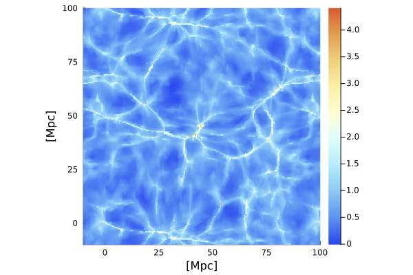
nstreams_field = numberOfStreams_grid(Range, Range, Range, ps_dtfe)
Plots.heatmap(Range, Range, nstreams_field[length(Range) ÷ 2, :, :], aspect_ratio=:equal, xlims=(-10, L), ylims=(-10, L), clim=(1, 7), c=:lighttemperaturemap, xlabel="[Mpc]", ylabel="[Mpc]")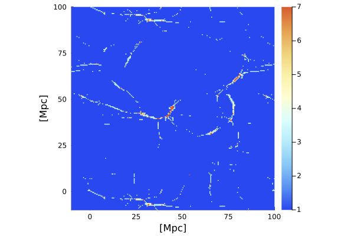
Every axis of a grid is its own range, with its own spacing, extent and number of points; within an axis the spacing is uniform. A slice is a grid with a single point along one axis, in any orientation, and costs about as much as the tetrahedra that cross it:
Range = 0:0.2:100.
s = L/2:L/2
slice_x = density_grid(s, Range, Range, ps_dtfe)[1, :, :]
slice_y = density_grid(Range, s, Range, ps_dtfe)[:, 1, :]
slice_z = density_grid(Range, Range, s, ps_dtfe)[:, :, 1]
Plots.plot(
Plots.heatmap(Range, Range, log10.(slice_x), aspect_ratio=:equal, c=:lighttemperaturemap, xlims=(0, L), ylims=(0, L), title="x = L/2", xlabel="[Mpc]", ylabel="[Mpc]"),
Plots.heatmap(Range, Range, log10.(slice_y), aspect_ratio=:equal, c=:lighttemperaturemap, xlims=(0, L), ylims=(0, L), title="y = L/2", xlabel="[Mpc]", ylabel="[Mpc]"),
Plots.heatmap(Range, Range, log10.(slice_z), aspect_ratio=:equal, c=:lighttemperaturemap, xlims=(0, L), ylims=(0, L), title="z = L/2", xlabel="[Mpc]", ylabel="[Mpc]");
layout = (1, 3), size = (1500, 450))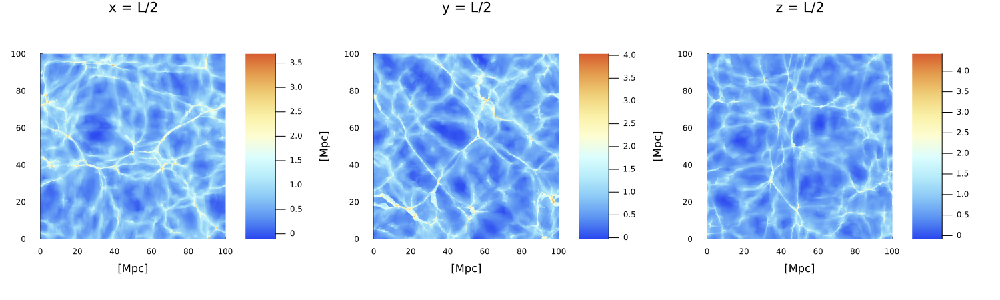
A slab with a different spacing along each axis gives, for example, the mean density through a 20 Mpc thick layer:
xs, ys, zs = 0:0.2:100., 0:0.4:100., 40:1.:60.
slab = density_grid(xs, ys, zs, ps_dtfe) # array of size (501, 251, 21)
slab_mean = dropdims(sum(slab; dims = 3); dims = 3) ./ length(zs)
Plots.heatmap(ys, xs, log10.(slab_mean), aspect_ratio=:equal, xlims=(0, L), ylims=(0, L), c=:lighttemperaturemap, xlabel="y [Mpc]", ylabel="x [Mpc]", title="mean density for 40 < z < 60 Mpc")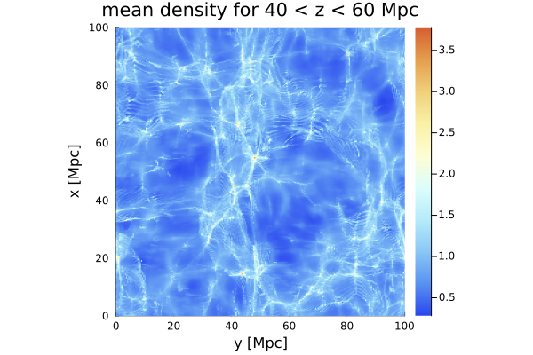
The threads split the z-planes of a grid; start Julia with julia -t auto to use them. Grid values are point samples of the estimator. Near caustics, where the density concentrates in thin multistream regions, the grid integral of the density converges to the total mass only as the grid refines; the integral of the estimator itself equals the total mass exactly.
Large simulations: sub-boxes
A simulation with 512³ or 1024³ particles has a tessellation too large to keep in memory. The sub-box routines cut the box into N_sub³ sub-boxes, build the estimator of one sub-box at a time, rasterise it into the grid and release it. Every sub-box takes its particles with a frame of pad lattice spacings (default 5) and their periodic images, and keeps the tetrahedra whose centroid lies in its core. With parallel = k the routines build k sub-box estimators concurrently, at k times the memory of one; the grids do not depend on k.
PS_DTFE_subbox builds the estimators once and saves them to a directory, from which the grid routines read them back:
N_sub, parallel = 2, 2
ps_dtfe_sb = PS_DTFE_subbox(coords_q, coords_x, vels, m, sim_box; N_sub, parallel, dir = mktempdir())
nothingThe sub-box versions of the grid routines take the same grids. A slice:
Range = 0:0.2:100.
density_field = density_grid_sb(L/2:L/2, Range, Range, ps_dtfe_sb; parallel)[1, :, :]
Plots.heatmap(Range, Range, log10.(density_field), aspect_ratio=:equal, xlims=(0, L), ylims=(0, L), c=:lighttemperaturemap, xlabel="[Mpc]", ylabel="[Mpc]")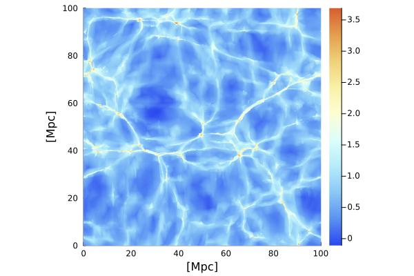
number_field = numberOfStreams_grid_sb(L/2:L/2, Range, Range, ps_dtfe_sb; parallel)[1, :, :]
Plots.heatmap(Range, Range, number_field, aspect_ratio=:equal, xlims=(0, L), ylims=(0, L), clim=(1, 7), c=:lighttemperaturemap, xlabel="[Mpc]", ylabel="[Mpc]")The grid equals the point queries of the sub-box estimators, summed over the sub-boxes:
Range_check = 0:2.:100.
points = [[L/2, y, z] for y in Range_check, z in Range_check]
density_points = zeros(size(points))
PhaseSpaceDTFE.foreach_subbox(ps_dtfe_sb; parallel) do est
density_points .+= density.(points, Ref(est))
end
density_grid_sb(L/2:L/2, Range_check, Range_check, ps_dtfe_sb; parallel)[1, :, :] ≈ density_pointstruerasterise_sb returns the density and the number of streams together. Float32 densities and UInt16 stream counts take 6 instead of 16 bytes per grid point:
Range = -10:1.:100.
density_field, number_field = rasterise_sb(Range, Range, Range, ps_dtfe_sb; parallel, density_type = Float32, streams_type = UInt16)
Plots.heatmap(Range, Range, log10.(density_field[length(Range) ÷ 2, :, :]), aspect_ratio=:equal, xlims=(-10, L), ylims=(-10, L), c=:lighttemperaturemap, xlabel="[Mpc]", ylabel="[Mpc]")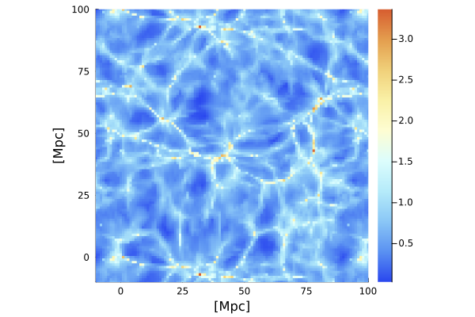
A three-dimensional view of the density needs volume rendering, which GLMakie provides (CairoMakie cannot draw volumes). A maximum-intensity projection shows the densest point along every line of sight, so its colour range comes from the maxima along a line of sight; a range from the voxels themselves would saturate the image:
import GLMakie
GLMakie.activate!()
Range3D = range(0, L, length = 257)[1:end-1] # the periodic cell [0, L)³
ρ̄ = m * Ni^3 / L^3
δlog = log10.(density_grid_sb(Range3D, Range3D, Range3D, ps_dtfe_sb; parallel, density_type = Float32) ./ ρ̄)
vmin, vmax = quantile(vec(maximum(δlog; dims = 3)), (0.02, 0.998))
extent = (first(Range3D), last(Range3D))
fig = GLMakie.Figure(size = (1000, 750))
ax = GLMakie.Axis3(fig[1, 1]; title = "N-body density field (sub-boxes)", aspect = :equal,
limits = (0, L, 0, L, 0, L), xlabel = "x [Mpc]", ylabel = "y [Mpc]", zlabel = "z [Mpc]")
vol = GLMakie.volume!(ax, extent, extent, extent, δlog; colormap = :lighttemperaturemap, algorithm = :mip,
colorrange = (vmin, vmax), interpolate = true)
GLMakie.Colorbar(fig[1, 2], vol; label = "log₁₀ ρ/ρ̄ (maximum along the line of sight)")
display(GLMakie.Screen(), fig) # an interactive window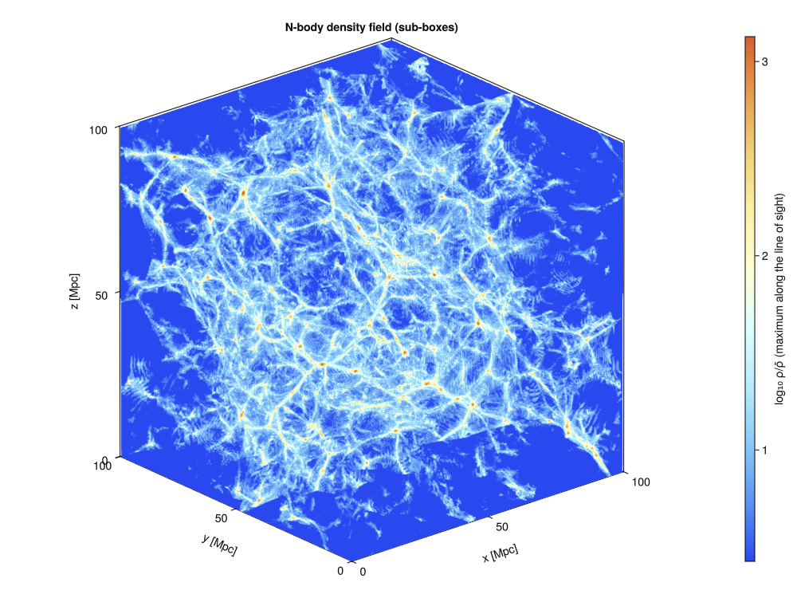
Velocities of the streams
velocity_grid_sb (and velocity_grid for a single estimator) gives the velocity and the density of every stream at every grid point. With deformation = true it also stores the divergence, the shear tensor and the vorticity of every stream, from the velocity gradient of its tetrahedron:
Range = 0:1.:100.
G = velocity_grid_sb(Range, Range, Range, ps_dtfe_sb; parallel, velocity_type = Float32, deformation = true)
nothingAt the grid point with the most streams, G[ix, iy, iz] gives the velocity of every stream, one row per stream:
ix, iy, iz = Tuple(argmax(G.nstreams))
G.nstreams[ix, iy, iz], G[ix, iy, iz](69, Float32[-112.031746 794.9459 175.67993; 180.54056 416.70316 -14.099401; … ; 500.33334 834.87054 355.84436; -517.92395 600.2142 24.05709])stream_density(G, ix, iy, iz), stream_divergence(G, ix, iy, iz)(Float32[17.130173, 20.348356, 33.564415, 275.5056, 146.9866, 35.761444, 50.52646, 129.40997, 181.69933, 121.75216 … 130.79114, 257.86664, 208.75523, 21.559383, 158.27493, 30.012444, 256.11594, 186.97507, 156.67912, 28.619009], Float32[108.06109, 2678.549, -566.08606, -956.1546, 142253.83, -369.23642, -2679.9038, -1168.3507, 1.0866139, 1534.4316 … -530.00836, -1224.9302, -2618.4736, -792.52075, -1586.421, -736.68787, -1281.4159, -6851.426, 1834.2495, 799.66547])The stream-density weighted mean of the x-velocity in a slice, as velocitySum, and the spread of the x-velocity between the streams, which vanishes in single-stream regions:
ix = length(Range) ÷ 2
vx_mean = [(ρ = stream_density(G, ix, iy, iz); isempty(ρ) ? NaN : sum(ρ .* G[ix, iy, iz][:, 1]) / sum(ρ)) for iy in eachindex(Range), iz in eachindex(Range)]
vx_spread = [(V = G[ix, iy, iz]; isempty(V) ? NaN : maximum(V[:, 1]) - minimum(V[:, 1])) for iy in eachindex(Range), iz in eachindex(Range)]
Plots.plot(
Plots.heatmap(Range, Range, vx_mean, aspect_ratio=:equal, xlims=(0, L), ylims=(0, L), c=:lighttemperaturemap, xlabel="[Mpc]", ylabel="[Mpc]", title="mean vx [km/s]"),
Plots.heatmap(Range, Range, vx_spread, aspect_ratio=:equal, xlims=(0, L), ylims=(0, L), c=:lighttemperaturemap, xlabel="[Mpc]", ylabel="[Mpc]", title="spread of vx between streams [km/s]");
layout = (1, 2), size = (1100, 450))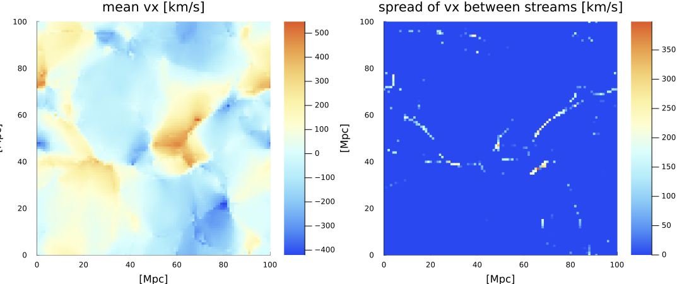
Velocity deformation
stream_average(G, field) gives the density-weighted mean over the streams of :velocity, :divergence, :shear (the components xx, yy, zz, xy, xz and yz) or :vorticity, the grid counterparts of velocitySum, divergenceSum, shearSum and vorticitySum:
divergence_field = stream_average(G, :divergence)[ix, :, :]
vorticity_field = stream_average(G, :vorticity)[ix, :, :, :]
shear_field = stream_average(G, :shear)[ix, :, :, :]
vorticity_norm = sqrt.(sum(abs2, vorticity_field; dims = 3))[:, :, 1]
shear_norm = sqrt.(shear_field[:, :, 1].^2 .+ shear_field[:, :, 2].^2 .+ shear_field[:, :, 3].^2 .+
2 .* (shear_field[:, :, 4].^2 .+ shear_field[:, :, 5].^2 .+ shear_field[:, :, 6].^2))
Plots.plot(
Plots.heatmap(Range, Range, divergence_field, aspect_ratio=:equal, xlims=(0, L), ylims=(0, L), c=:lighttemperaturemap, xlabel="[Mpc]", ylabel="[Mpc]", title="mean ∇·v"),
Plots.heatmap(Range, Range, log10.(vorticity_norm), aspect_ratio=:equal, xlims=(0, L), ylims=(0, L), c=:lighttemperaturemap, xlabel="[Mpc]", ylabel="[Mpc]", title="log10 |mean ω|"),
Plots.heatmap(Range, Range, log10.(shear_norm), aspect_ratio=:equal, xlims=(0, L), ylims=(0, L), c=:lighttemperaturemap, xlabel="[Mpc]", ylabel="[Mpc]", title="log10 |mean σ|");
layout = (1, 3), size = (1500, 450))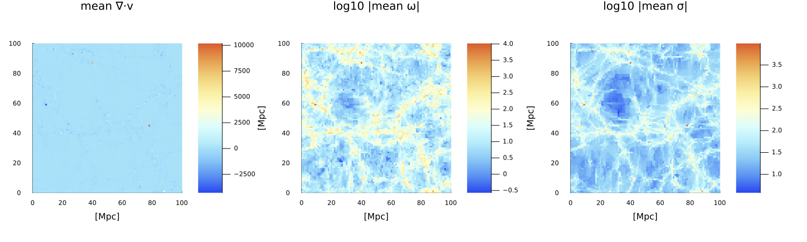
Vorticity arises through shell crossing, so for a continuous flow it vanishes in single-stream regions. The estimator interpolates the particle velocities linearly, so its single-stream vorticity reflects the discreteness of the particles. The typical (median) vorticity in single- and multistream regions of the slice:
single = G.nstreams[ix, :, :] .== 1
median(filter(isfinite, vorticity_norm[single])), median(filter(isfinite, vorticity_norm[.!single]))(12.263809f0, 203.56522f0)Sub-boxes on the fly
Without saving the estimators, the grid routines build the sub-boxes from the particles, parallel at a time, rasterise them and release them in turn. The grid does not depend on parallel, only the time and the memory do:
Range = -10:1.:100.
density_one = density_grid_sb(Range, Range, Range, coords_q, coords_x, m, sim_box; N_sub, parallel = 1)
density_field = density_grid_sb(Range, Range, Range, coords_q, coords_x, m, sim_box; N_sub, parallel)
density_field == density_onetrueFor the Kuhn split, ps_dtfe_grid() computes the density and the number of streams on a grid directly from the particles, with the tetrahedra generated on the fly from the lattice; it needs only the particles, their densities and the grid:
density_field, nstreams_field = ps_dtfe_grid(coords_q, coords_x, m, sim_box, Range, Range, Range) # tessellation = :kuhn by defaultOptions
PS_DTFE and PS_DTFE_periodic accept the following keyword arguments:
tessellation: the tessellation of the initial positions.:delaunay(default): the periodic Delaunay tessellation, for lattice, glass or other initial conditions. The positions are tessellated together with their periodic images within a frame of widthpad * L(by default four mean particle spacings). A smalljitter(default1e-5mean particle spacings) splits degenerate configurations, such as an exact lattice, consistently across the periodic images. TetGen tessellatesslabsslabs of the box concurrently (by default one per thread); together they give the tetrahedra of a single tessellation.:kuhn: the Kuhn (Freudenthal) split of the particle lattice, for lattice initial conditions withNi³ particles. Every cube of the lattice is split into the six tetrahedra that share its main diagonal, so every particle has the same star of 24 tetrahedra, and the estimator is exact for affine maps. The lattice site of every particle follows from its initial position, so the rows may come in any order.
vertex_density: the density at the particles.:mass(default): $\rho_i = 4 m_i / V(W_i)$, from the Eulerian volume of the star $W_i$ of the particle. Valid for any particle masses.:lagrangian: $\rho_i = \bar\rho\, V_L(W_i) / V(W_i)$, with the Lagrangian volume $V_L$ of the star. It assumes a uniform initial density and is then exact, also when the stars differ in size (glass initial conditions, the Delaunay tessellation) or the masses vary with the resolution (zoom simulations). Recommended with:delaunay.
G: the number of cells per side of the search index (defaultNi). A largerGgives faster point queries at the cost of memory.compact = true: the estimator recomputes the first corner and the inverse edge matrix of every tetrahedron at every query instead of storing them, with identical results, at a third of the memory and slower point queries.
kuhn = PS_DTFE(coords_q, coords_x, vels, m, sim_box; tessellation = :kuhn)
density_field = density_grid(L/2:L/2, 0:0.2:100., 0:0.2:100., kuhn)[1, :, :]
Plots.heatmap(0:0.2:100., 0:0.2:100., log10.(density_field), aspect_ratio=:equal, xlims=(0, L), ylims=(0, L), c=:lighttemperaturemap, xlabel="[Mpc]", ylabel="[Mpc]")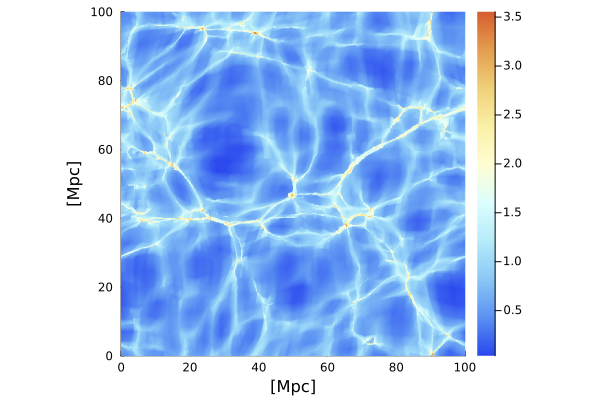
Without periodic boundaries
With periodicity = :nonperiodic (or PS_DTFE_nonperiodic), the estimator uses the Delaunay tessellation of the initial positions without periodic images, and takes query points as given, not modulo the box. The final positions are taken at the periodic image nearest to the initial positions, so a particle that truly moves more than L/2 along an axis lands at the wrong image. The thin tetrahedra on the convex hull of the initial positions (with two corners more than three lattice spacings apart along an axis) are removed; pass drop_simplices = false to keep them. The tetrahedra cover the convex hull of the particles, so points between the hull and the faces of the box have density zero, and with vertex_density = :mass the densities near the hull come out high; vertex_density = :lagrangian avoids this bias. Away from the faces the estimator equals the periodic one:
nonperiodic = PS_DTFE(coords_q, coords_x, vels, m, sim_box; periodicity = :nonperiodic)
density([L/2., L/2., L/2.], nonperiodic), density([L/2., L/2., L/2.], ps_dtfe)(18.340397513345415, 18.340397513345415)